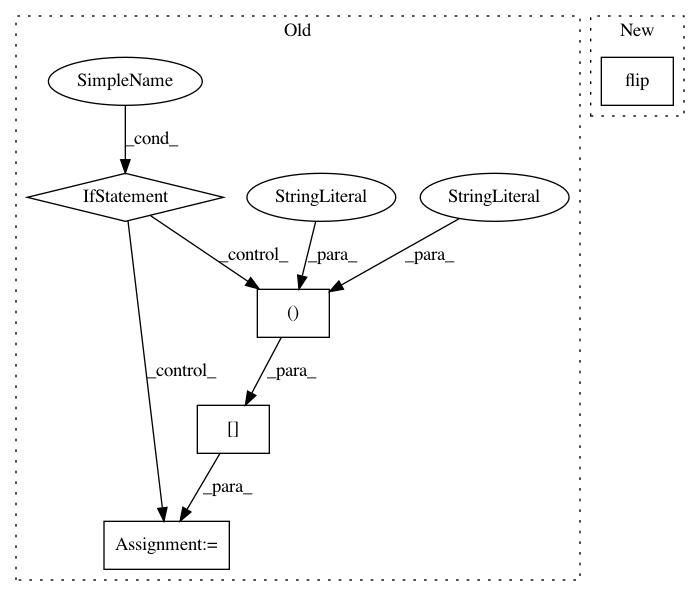

08c76ed8511e2e4d7f7a3f4406df4c073112e6bd,python/test/function/test_flip.py,,ref_flip,#Any#Any#,23
Before Change
x = x[::-1]
elif axis == 1:
x = x[::, ::-1]
elif axis == 2:
x = x[::, ::, ::-1]
else:
raise
return x
After Change
// x = x[::, ::, ::-1]
// else:
// raise
return np.flip(x, axes)
@pytest.mark.parametrize("ctx, func_name", ctxs)
@pytest.mark.parametrize("seed", [313])
In pattern: SUPERPATTERN
Frequency: 3
Non-data size: 5
Instances
Project Name: sony/nnabla
Commit Name: 08c76ed8511e2e4d7f7a3f4406df4c073112e6bd
Time: 2021-02-16
Author: Krishna.Wadhwani@sony.com
File Name: python/test/function/test_flip.py
Class Name:
Method Name: ref_flip
Project Name: analysiscenter/batchflow
Commit Name: 49f4e83ae4323e032bdd232e466e59b4aeceb458
Time: 2018-03-28
Author: g.ivanov@analysiscenter.ru
File Name: dataset/batch_image.py
Class Name: ImagesBatch
Method Name: _flip_
Project Name: pytorch/fairseq
Commit Name: 4fed0beca64a52aa718371dc3b2cf1fd979197a4
Time: 2021-02-10
Author: patrick.v.platen@gmail.com
File Name: fairseq/models/wav2vec/wav2vec2.py
Class Name: Wav2Vec2Model
Method Name: forward